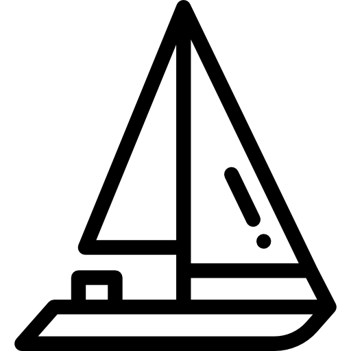

Nasza łajba
TES 32 Dreamer to duży, blisko 10 metrowy jacht doskonale nadający się do długich rejsów po akwenach śródlądowych, jak i wodach morskich. Posiada on bardzo obszerne wnętrze dając poczucie komfortu i intymności dla 6-8 osobowej załogi przy zachowaniu pełnej wysokości stania – 1,95m, co jest nie bez znaczenia dla wyższych załogantów. Jacht posiada jedną kajutę dziobową i dwie kajuty rufowe. W centralnej części jachtu znajduje się obszerna i komfortowa mesa wraz z wydzielonym ergonomicznym kambuzem wyposażonym we wszystkie niezbędnie udogodnienia. Jednostka posiada również kabinę sanitarną posiadającą WC, prysznic i umywalkę.
Kokpit Dreamaera oferuje profilowane, wygodne siedzisko dla sternika jak i komfortowe miejsca dla załogi. Jednostka wyposażona jest w długi trap bukszpryt, dzięki któremu wejście w porcie nawet przez dziób jest niezwykle łatwe i wygodne. Doskonale zachowuje się zarówno pod żaglami jak i na silniku. Odznacza się imponującym momentem prostującym, co stawia Tes 32 Dreamer w gronie najbardziej statecznych i bezpiecznych polskich jachtów żaglowych.